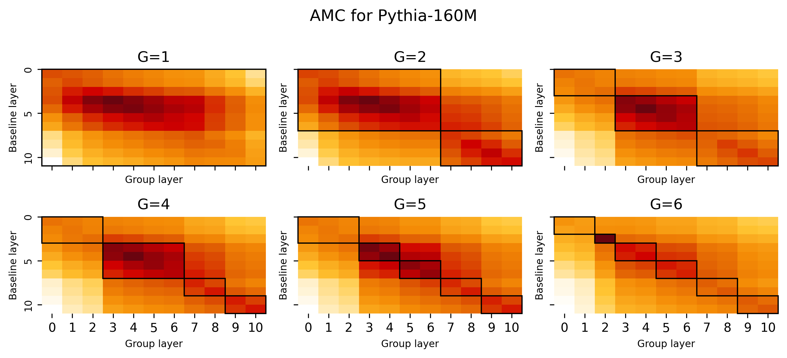
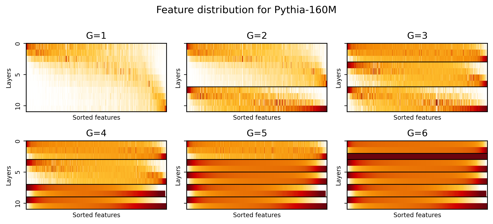

Abstract
Sparse Autoencoders (SAEs) have recently been employed as a promising unsupervised approach for understanding the representations of layers of Large Language Models (LLMs). However, with the growth in model size and complexity, training SAEs is computationally intensive, as typically one SAE is trained for each model layer. To address such limitation, we propose Group-SAE, a novel strategy to train SAEs. Our method considers the similarity of the residual stream representations between contiguous layers to group similar layers and train a single SAE per group. To balance the trade-off between efficiency and performance, we further introduce AMAD (Average Maximum Angular Distance), an empirical metric that guides the selection of an optimal number of groups based on representational similarity across layers. Experiments on models from the Pythia family show that our approach significantly accelerates training with minimal impact on reconstruction quality and comparable downstream task performance and interpretability over baseline SAEs trained layer by layer. This method provides an efficient and scalable strategy for training SAEs in modern LLMs.
Group-SAE
Our method leverages the observation that nearby neural network layers tend to learn similar representations. Instead of training individual SAEs for each layer, we:
- Compute Angular Distances: Calculate mean angular distances between residual stream activations of different layers
- Hierarchical Clustering: Use agglomerative clustering with complete linkage to group similar layers
- Optimal Group Selection: Apply AMAD (Average Maximum Angular Distance) metric to determine the optimal number of groups
- Efficient Training: Train a single SAE per group, significantly reducing computational costs
AMAD Metric
The Average Maximum Angular Distance quantifies the average worst-case distance within each group:
AMAD(G) = (1/G) × Σ D_g
We identify an optimal threshold around AMAD ≈ 0.2, beyond which reconstruction performance degrades more rapidly.
Evaluations
Reconstruction vs. Similarity

Mean Maximum Concordance (MMCO) showing feature similarity between baseline and Group-SAEs.

Feature activation distribution across layers within groups, showing how features spread across similar layers.
Reconstruction vs. Compute
Mean Maximum Concordance (MMCO) showing feature similarity between baseline and Group-SAEs.
Feature activation distribution across layers within groups, showing how features spread across similar layers.
Feature Analysis
Autointerpretability
Mean Maximum Concordance (MMCO) showing feature similarity between baseline and Group-SAEs.
Feature Concordance
Mean Maximum Concordance (MMCO) showing feature similarity between baseline and Group-SAEs.
Feature Distribution
Feature activation distribution across layers within groups, showing how features spread across similar layers.
BibTeX
@article{GroupSAE2024,
title={Efficient Training of Sparse Autoencoders for Large Language Models via Layer Groups},
author={Group-SAE Research Team},
year={2024},
url={https://github.com/ghidav/group-sae}
}